Префектура Айти · Сэто · ремесло
Сэто: тысячелетний город керамики, где всё нужное для гончара есть на одной улице
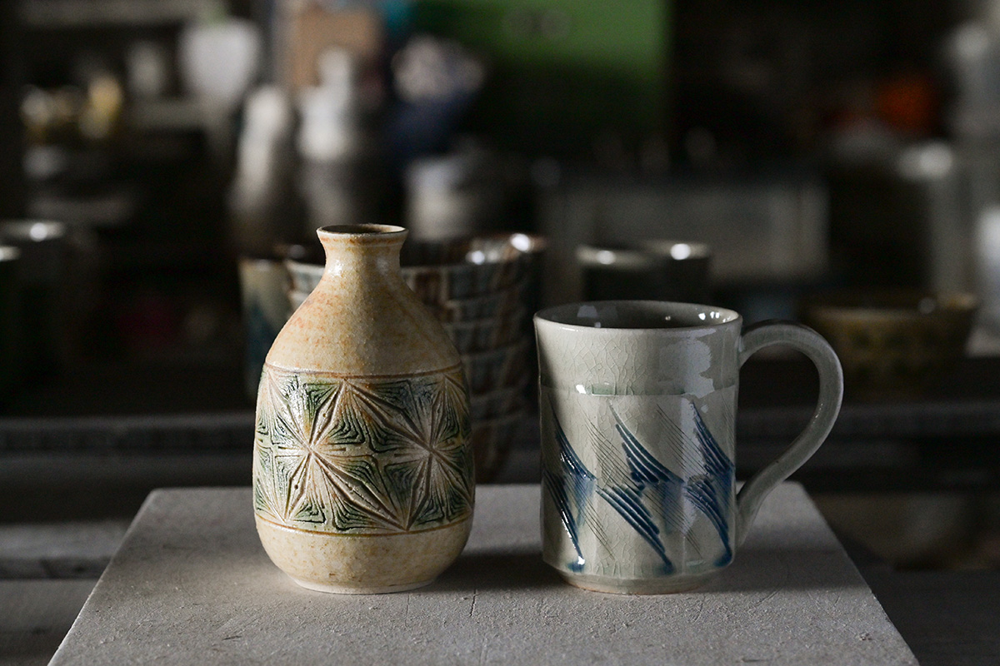
В Японии посуду из глины по привычке называют «сэтомоно», «вещи из Сэто». Этот город к северо-востоку от Нагои больше тысячи лет живёт гончарным делом, и в нём до сих пор можно пройти весь путь чашки: от карьера с белой глиной до деревянной коробки, в которой её дарят.
Глина
Почему именно Сэто
Сэто входит в число «шести старых печей Японии», шести центров, где керамику делают без перерыва с древности. Две черты отличают его от остальных. Здесь раньше всех в стране стали покрывать посуду глазурью, и здесь делают и керамику, и фарфор.
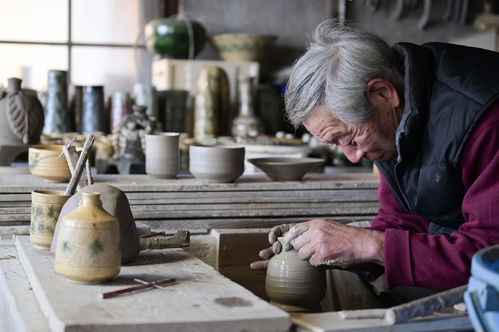
Всё начинается с земли. Местная глина белая и вязкая, с ней легко работать, и форму она держит отлично. Особенно ценится «гайромэ», «лягушачий глаз»: эту глину добывают и готовят в Сэто, и даже небольшая её добавка делает массу пластичнее и прочнее, поэтому её подмешивают в гончарную глину по всей Японии. Вокруг города к тому же залегает выветренный гранит, который здесь называют «саба». Если смешать его с глиной, получается масса для фарфора. Так что и керамику, и фарфор в Сэто делают из своей земли.
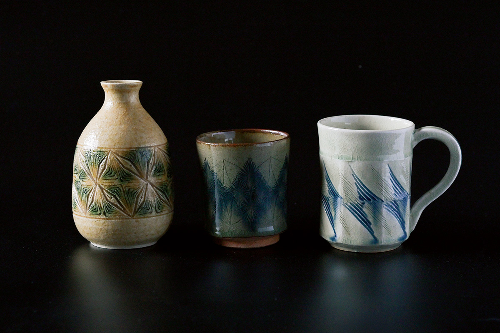
История
От «Ко-Сэто» до фигурок на экспорт
Корни здешнего ремесла уходят к печам Санагэ, где ещё в период курганов, в III–VI веках, обжигали серую посуду суэки. Эти печи стояли на холмах на востоке нынешней Нагои. Во второй половине X века керамику начали всерьёз делать в самом Сэто, а в Средние века здесь появилась глазурованная посуда «Ко-Сэто», «старый Сэто».
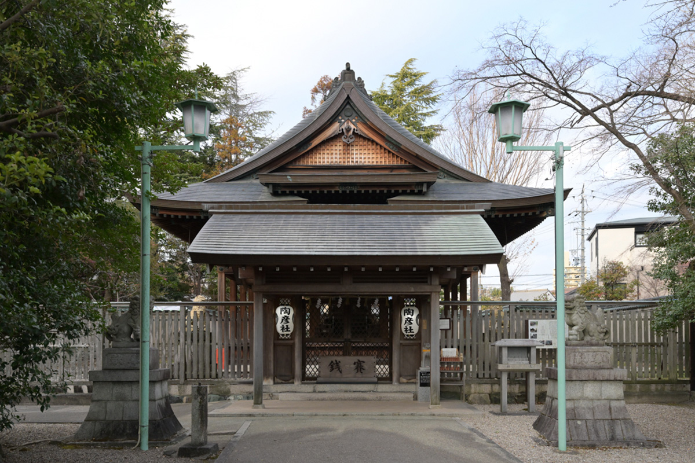
В эпоху Камакура (1185–1333), по преданию, в Сэто пришёл человек, которого здесь называют «отцом керамики». Гончар Кагэмаса Като, по прозвищу Тосиро, ездил в Китай, изучил там ремесло и, вернувшись, искал по всей Японии глину, пригодную для посуды. «Говорят, в святилище Фукагава в Сэто он услышал повеление божества: идти на юго-восток. Там он и нашёл здешнюю превосходную глину», рассказывает Тодзабуро Като, потомок Тосиро в 31-м поколении. Тосиро поселился в Сэто, построил печь и, как гласит предание, положил начало процветанию города. Святилище Суэхико, где ему поклоняются, стоит рядом со святилищем Фукагава.
В эпоху воюющих провинций в Сэто сложились техники разных глазурей, среди них жёлтый «Ки-Сэто» и молочно-белый «Сино». В эпоху Эдо Ёсинао Токугава (1601–1650), первый правитель княжества Овари и сын сёгуна Иэясу Токугавы, велел обжигать посуду в саду Офукэмару Нагойского замка. Так появилась «Офукэ-яки», одна из знаменитых разновидностей керамики Сэто. «Девятнадцатого Тодзабуро тоже позвали к дому Токугава, он делал для замка утварь для чайной церемонии», говорит нынешний глава печи.
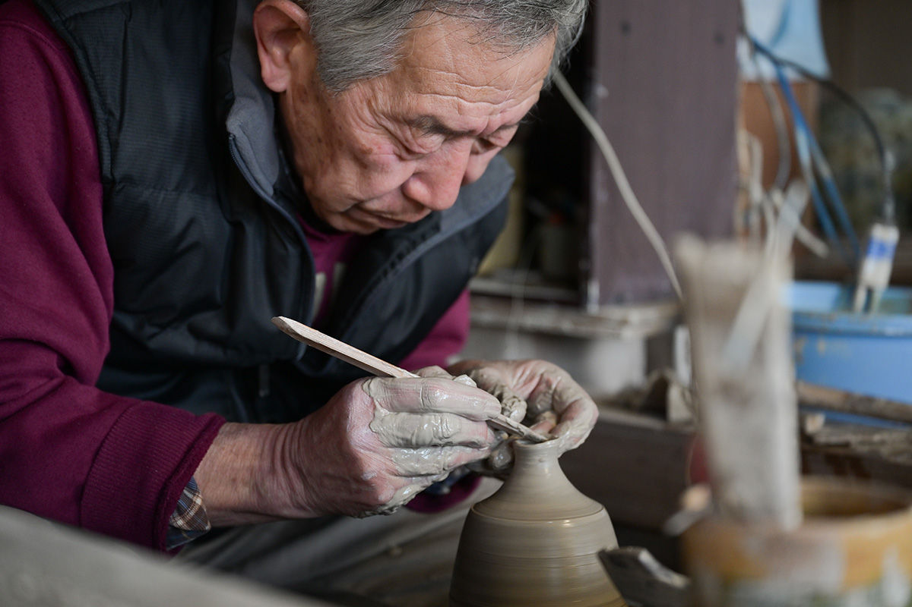
В конце эпохи Эдо гончар Тамикити Като (1772–1824), которого потом назовут «отцом фарфора» Сэто, изучил секреты фарфора в краю Хидзэн на Кюсю и привёз их домой. С этого времени в Сэто всё активнее делают и фарфор.
В эпоху Мэйдзи благодаря выставкам в Японии и за границей начался экспорт посуды. Потом стремительно выросло производство фигурок людей и животных, которые здесь называют «новелти». Тонкую лепку повторяли с помощью точных гипсовых форм, и эти фигурки стали целой эпохой в истории керамики Сэто.
Так город стал крупнейшим центром керамики, а «сэтомоно» превратилось в общее слово для посуды. За века вокруг гончаров здесь поселились все, кто связан с ремеслом: от мастеров по глине до продавцов инструментов. На них Сэто держится и сегодня.
«Тодзабуро-гама»
- Адрес
- префектура Айти, Сэто, Камамото-тё, 80
- Телефон
- +81 561-82-4832
- Цены / Вход
- галерею можно посмотреть, если хозяева на месте
Ремесло
Шесть шагов, и все в одном городе
Секрет Сэто в том, что всё нужное для керамики здесь под рукой: глина, инструменты и мастера. Весь путь, от подготовки глины до коробки, в которую кладут готовую вещь, проходит в пределах города.
Добыча
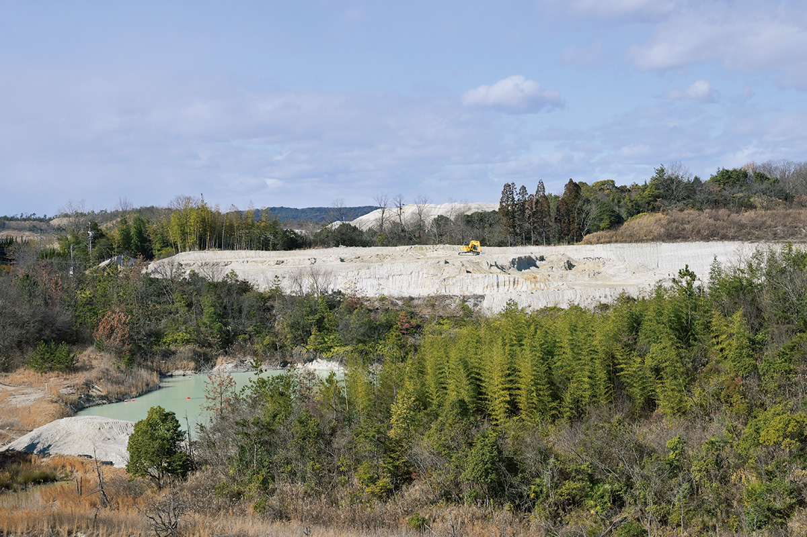
Глину, на которой стоит керамика Сэто, добывают совсем близко к центру, примерно в 2 км от станции Овари-Сэто железной дороги Мэйтэцу. Местные зовут этот огромный карьер «Гранд-Каньоном Сэто», и его глина работает на гончарные центры по всей Японии. Эта глина образовалась из выветрившегося гранита горы Санагэ, поднятой магмой 50 миллионов лет назад.
Подготовка глины
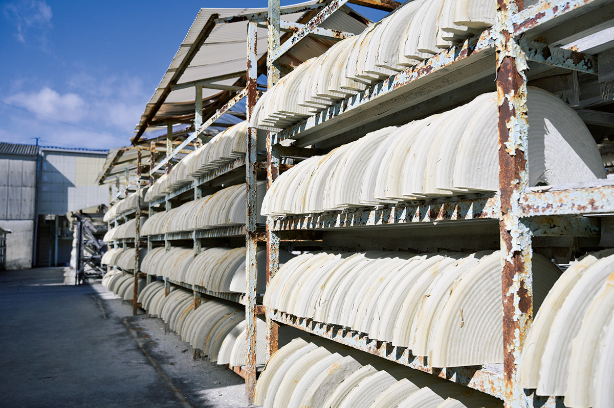
Большая часть добытой глины проходит долгую обработку, прежде чем попасть к гончару. На руднике «Касэн» сырую глину дробят, размешивают в воде, тщательно отделяют кварцевый песок, слюду и другие примеси, обезвоживают и сушат на солнце. Так получается отмученная глина «гайромэ».
Рудник «Касэн»
- Адрес
- префектура Айти, Сэто, Юнонэ-тё, 47
- Телефон
- +81 561-82-2110
- Цены / Вход
- посещение закрыто, но время от времени рудник проводит экскурсии
Формовка
Способов формовки в Сэто много. Один из них литьё: глину разводят в воде до жидкой массы, шликера, и заливают в гипсовую форму. У лавки «Мураками канамоно» покупатели по всей Японии: здесь больше 1000 видов гончарных инструментов, от гончарных кругов до стеков.
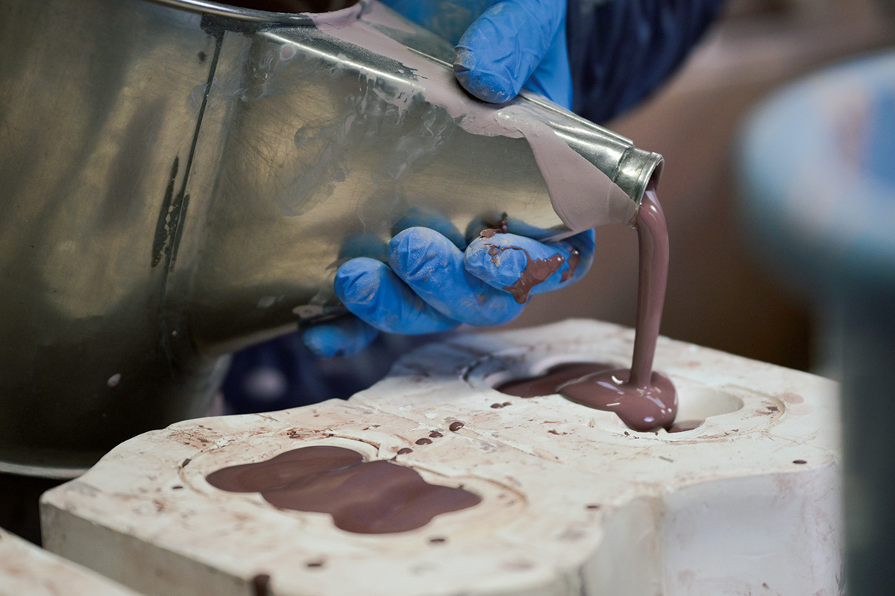
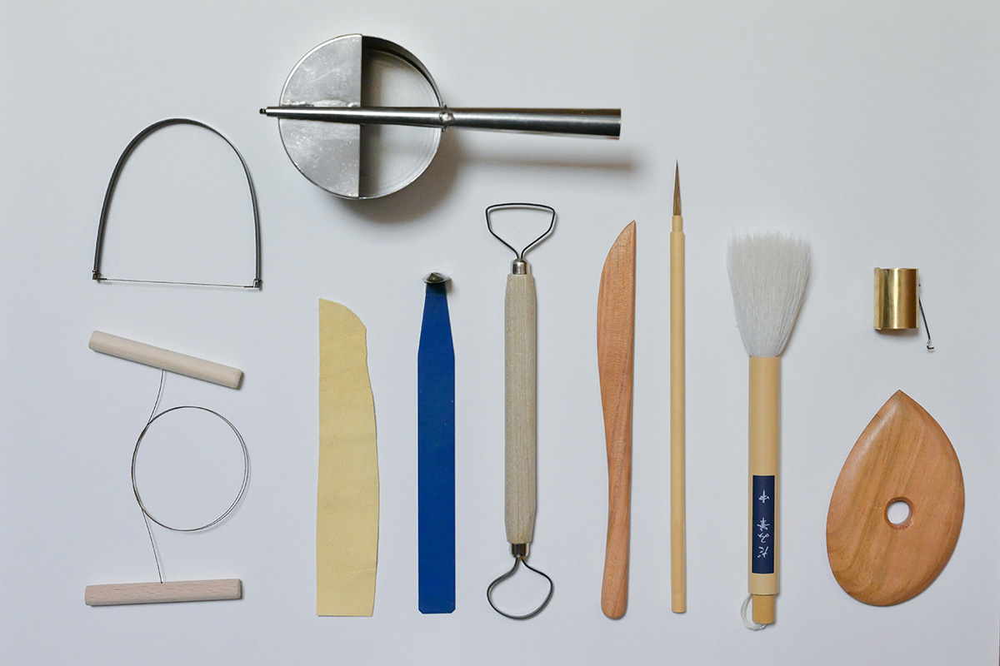
«Мураками канамоно»
- Адрес
- префектура Айти, Сэто, Итёноки-тё, 56
- Телефон
- +81 561-82-2749
- Часы работы
- 9:00–18:00
- Выходные
- воскресенье, праздники
Глазурь
Сэто одним из первых в Японии, ещё в Средние века, стал покрывать посуду глазурью. Глазурь, нанесённая после первого обжига, делает поверхность глубже, а вещь прочнее. В лавке «Кадзита эногу» есть всё для гончара: сырьё для глазурей, краски для росписи поверх глазури и под ней, оксиды металлов.
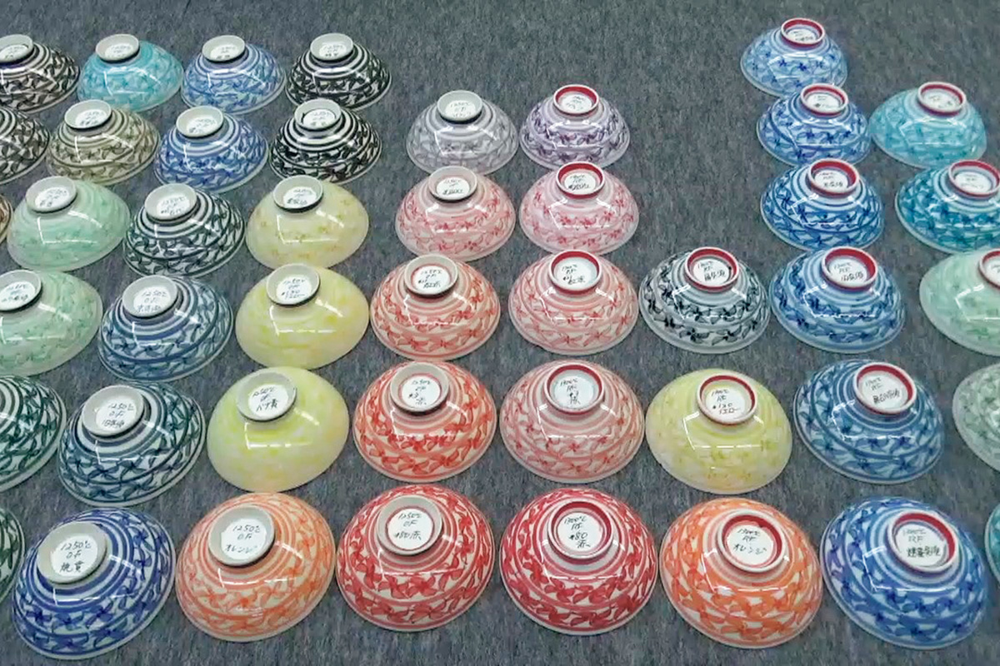
«Кадзита эногу»
- Адрес
- префектура Айти, Сэто, Тогэн-тё, 2-22
- Телефон
- +81 561-82-2765
- Часы работы
- 7:00–19:00
- Выходные
- воскресенье, праздники
- Сайт
- kajita-enogu.com
Обжиг
Покрытую глазурью вещь хорошо сушат и отправляют на основной обжиг в газовую или электрическую печь, способную дать больше 1200 °C. В компании «Осава гасуро сёкай», которая строит печи, профессиональные обжигальщики проектируют печь и учат, как правильно вести обжиг.
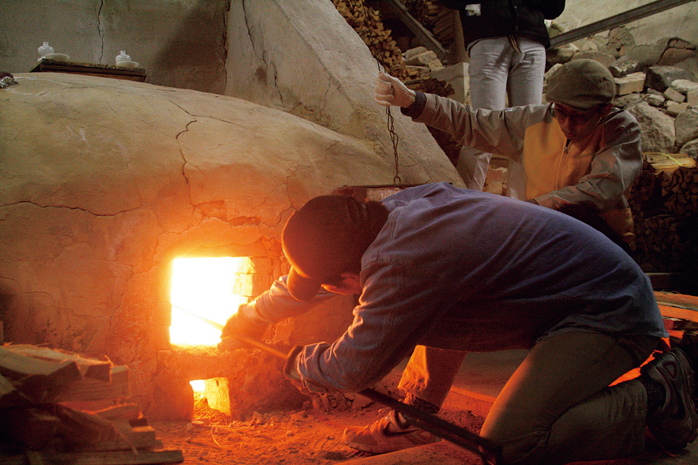
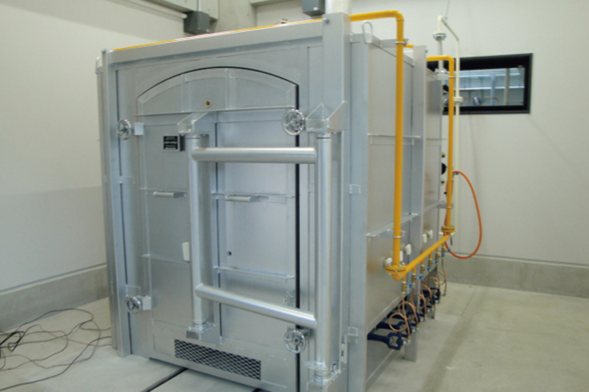
«Осава гасуро сёкай»
- Адрес
- префектура Айти, Сэто, Минами-Хисино-тё, 106
- Телефон
- +81 561-82-2100
- Часы работы
- 8:00–17:00
- Выходные
- воскресенье, праздники
Упаковка
Хорошую посуду в Японии дарят в деревянной коробке, перевязанной шнуром. Мастерская «Мацубара», которой доверяют гончары, делает такие коробки вручную, по одной: под каждую вещь и по желанию заказчика выбирают павлонию, криптомерию или пихту. «Тодзабуро-гама» много лет заказывает коробки именно здесь.
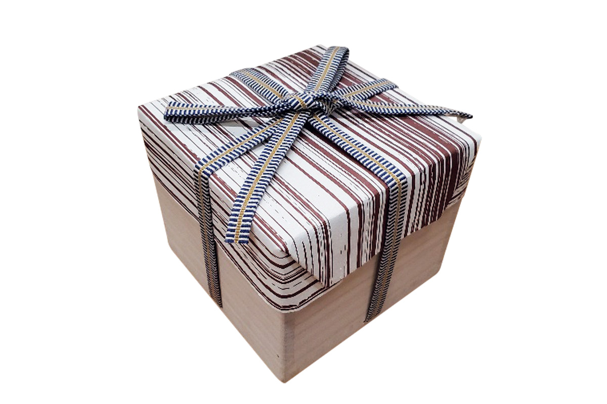
«Мацубара»
- Адрес
- префектура Айти, Сэто, Синмэй-тё, 125
- Телефон
- +81 561-82-6658
- Часы работы
- 8:30–17:00
- Выходные
- воскресенье, праздники
- Сайт
- wood-box.biz
Формы
Литьё, в котором всё делают руки
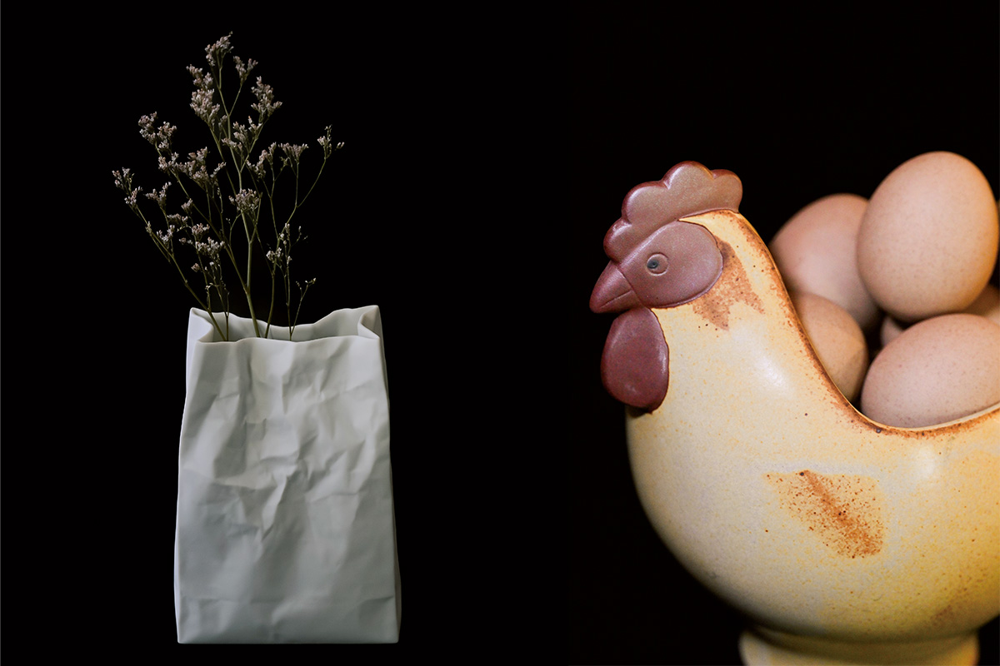
Без гипсовых форм не было бы фигурок, которые так ценили за границей. «Массовое литьё» звучит как заводской конвейер, но на деле керамика, сделанная в формах, это череда ручных операций. Богатая глина Сэто, сама среда города и люди, которые вкладывают душу в работу, сделали здешнюю керамику такой разной.
«Касива-гама»: северный дизайн и керамика Сэто
Мастерская открылась в 1965 году. Её основатель, керамист, увлёкся работами финского дизайнера Кая Франка, начал делать вещи в скандинавском духе и стал отправлять их в Европу и Америку. В 2026 году мастерской руководит его сын. Фигурки животных из красной глины с оксидом железа под собственной глазурью мастерской получаются удивительно тёплыми.
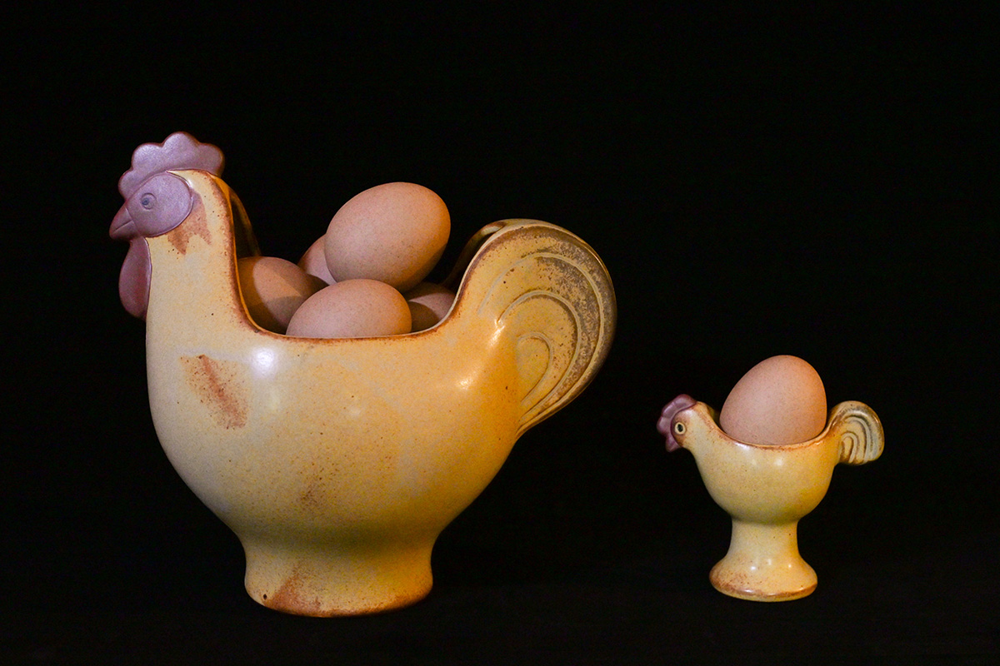
Фигурки животных и растений в скандинавском стиле, которые сын создал вместе с отцом, нашли много поклонников и в Японии, и в Европе. Фигурки и вазы здесь делают техникой «габа-икоми»: шликер заливают в гипсовую форму и дают ему схватиться.
«Гипс впитывает воду, и внутри получается полая заготовка. Но наша глина с оксидом железа сохнет медленно, поэтому одну форму можно заливать не больше четырёх раз в день»
глава мастерской «Касива-гама»
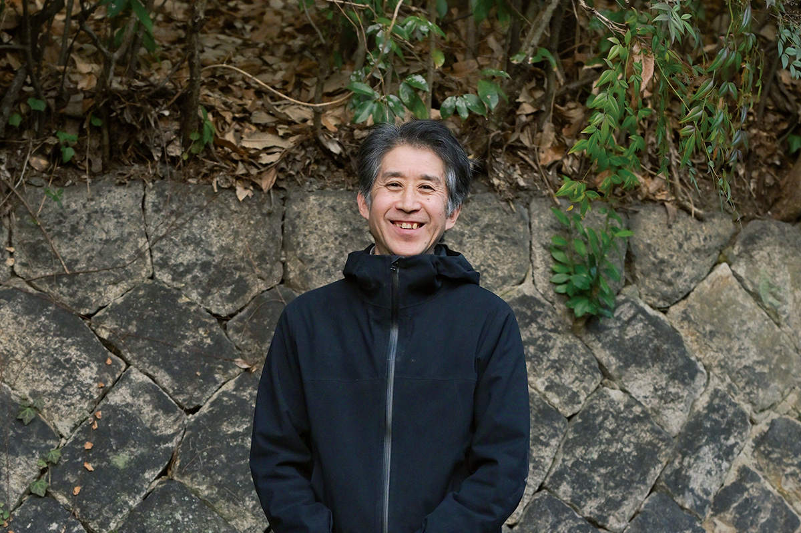
Больше вещей так не сделать, но ради поверхности, которой здесь дорожат, состав глины не меняли со времён основателя.
«Касива-гама»
- Адрес
- префектура Айти, Сэто, Хигаси-Бора-тё, 32
- Телефон
- +81 561-82-8887
- Сайт
- kashiwacraft.com
Ceramic Japan: керамика из коллекции Нью-Йорка
Компания Ceramic Japan с помощью форм делает вещи, в которых главное дизайн. Она работает с дизайнерами из штата и со стороны, и новые вещи выходят одна за другой. Самая известная из них серия «Кринкл» дизайнера Макото Комацу: керамика повторяет фактуру мятого бумажного пакета. Ваза из этой серии вошла в постоянную коллекцию Музея современного искусства в Нью-Йорке, а сами вещи продаются по всему миру.
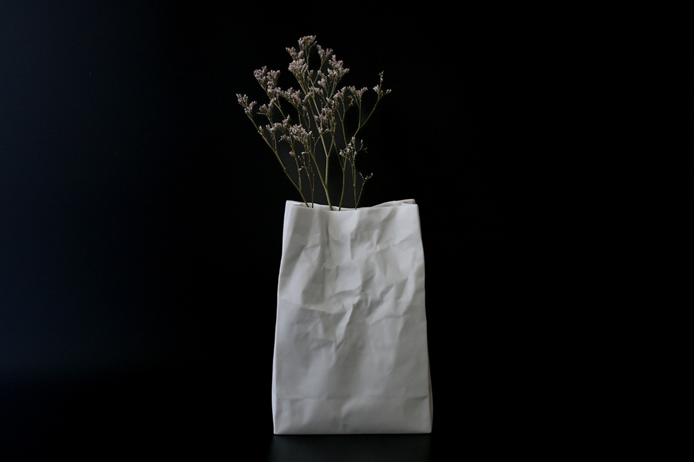
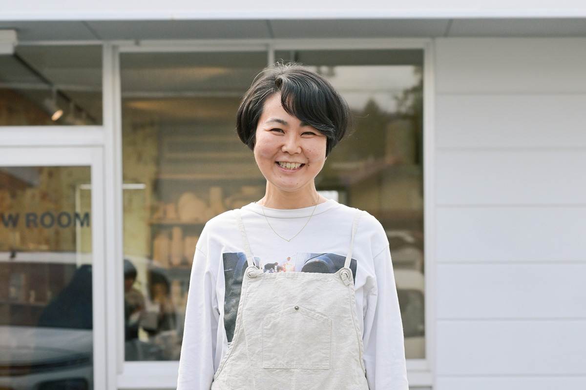
Компания работала с десятком с лишним промышленных дизайнеров и делала с ними современную посуду и объекты.
«Чтобы точно передать форму, которую задумал дизайнер, мы для каждой вещи подбираем своё сочетание глины и глазури, свой способ и порядок работы»
директор Ceramic Japan
Вещи «Кринкл» после того, как их достают из формы, ещё дорабатывают ножом вручную, чтобы край не выглядел толстым.
Ceramic Japan
- Адрес
- префектура Айти, Сэто, Нака-Синано-тё, 60-4
- Телефон
- +81 561-42-0182
- Часы работы
- 9:00–17:00, шоурум только по записи
- Выходные
- суббота, воскресенье, праздники
M.M.Yoshihashi: мастерская форм выходит из тени
Мастерские форм в Сэто делают гипсовые формы по заказу гончаров. Глава третьего поколения M.M.Yoshihashi захотел делать и то, что придумывает сам, и компания стала выпускать собственные вещи. У неё три своих марки. Самая известная «Хорицукэ»: традиционные благопожелательные узоры в ней вырезаны рельефом. Эти вещи охотно берут магазины интерьера.
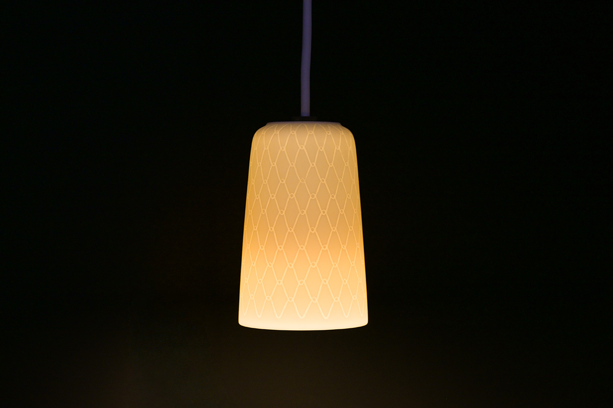
Для своих вещей мастерская сама делает модели, по которым потом снимают формы, и глава компании своими руками вырезает мелкий рельеф. Обжиг заказывают гончарам, которые лучше подходят под каждую вещь.
«Если правильно пользоваться формой, растёт и качество, и скорость. Хочется, чтобы об этом знали больше, поэтому иногда мы проводим мастер-классы „Ката-но гакко“, „Школа форм“»
глава M.M.Yoshihashi
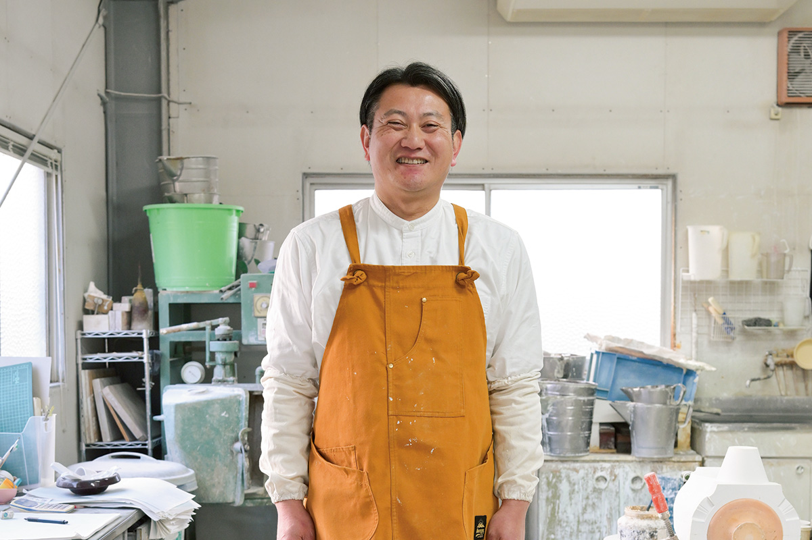
M.M.Yoshihashi
- Адрес
- префектура Айти, Сэто, Синано-тё, 4-22
- Телефон
- +81 561-41-0471
- Часы работы
- мастерская открыта только во время «Кама-мэгури», во вторые субботу и воскресенье мая и ноября, 9:00–16:00
- Сайт
- mmyoshihashi.com
SUIYO: посуда как барельеф
Супруги-керамисты из SUIYO вдохновляются печами Яочжоу, которые в эпоху Сун славились прекрасным селадоном. Чтобы приблизиться к этому идеалу, муж делает модель, а жена вырезает узор на гипсовой форме, и на готовой посуде проступает тончайший рисунок. На такие вещи хочется смотреть, как на произведения искусства.
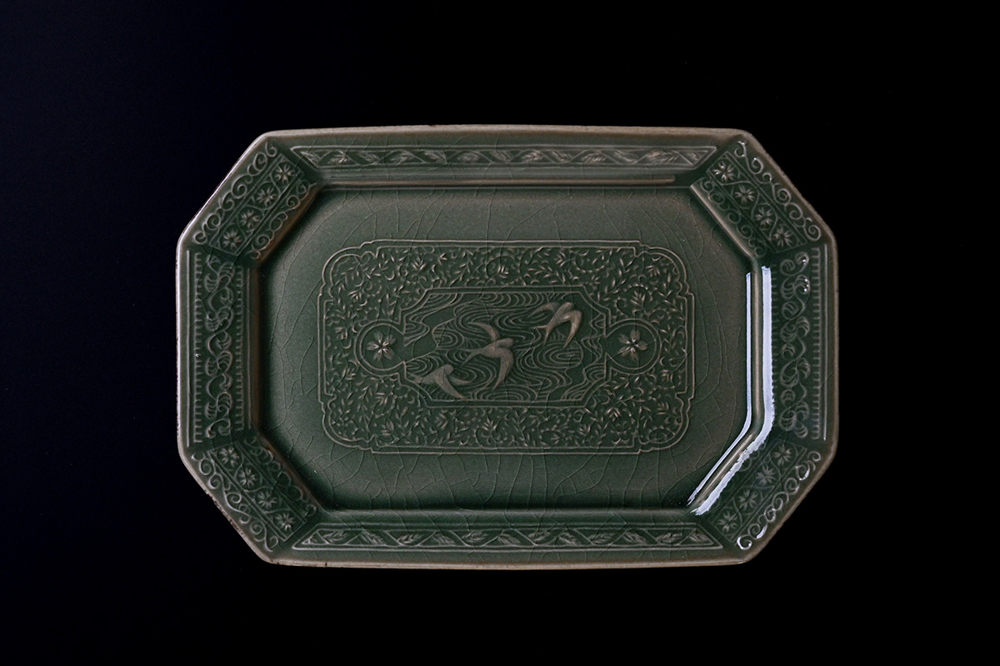
Особенно любят их серию «Ёкоку», «рельеф», с узором тонким, как гравюра.
«Посуда нужна, чтобы на неё класть еду, но мы хотим, чтобы на неё было приятно смотреть и самой по себе»
керамист из SUIYO
Жена придумывает узоры по мотивам великих картин и произведений искусства разных эпох и тщательно вырезает их на гипсовой форме, и посуда выходит объёмной, с глубиной.
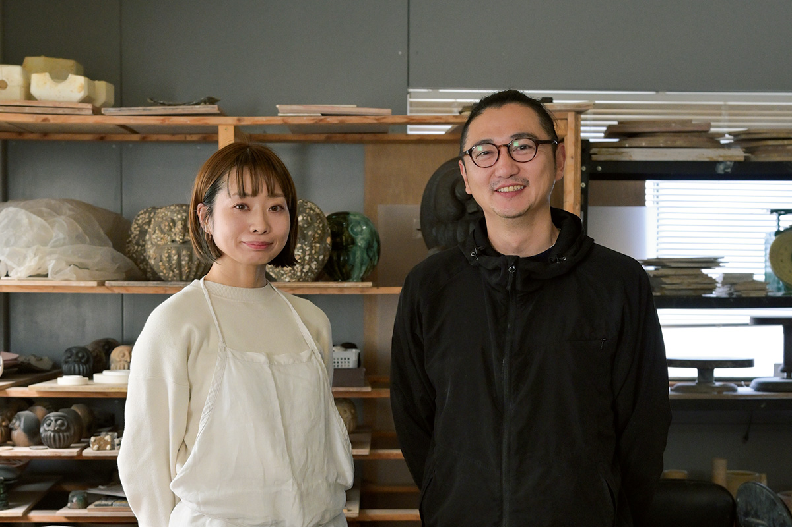
«Здесь есть всё: и гончары, и мастера глины, и мастера форм, и лавки инструментов. Мы решили, что лучшего места для работы не найти»
керамист из SUIYO
Муж изучал керамику в университете, объехал гончарные края всей Японии и выбрал для жизни Сэто.
SUIYO
- Адрес
- префектура Айти, Сэто, Косора-тё, 74-2
- Телефон
- +81 70-8328-0684
- Часы работы
- мастерская открыта только во время «Кама-мэгури», во вторые субботу и воскресенье мая и ноября, 9:00–16:00
- Сайт
- suiyo-works.com
Прогулка
Пять мест, чтобы почувствовать Сэто
Сэто окружён лесистыми холмами, и жизнь здесь течёт неспешно. Повсюду встречаются гончарные мастерские, лавки материалов и инструментов, оптовые склады посуды, и всё это складывается в картину, какую увидишь только в городе керамики.
«Сэтогура керамик плаза» и музей
Кто приехал за посудой, идёт в «Сэтогура керамик плаза», в 5 минутах пешком от станции Овари-Сэто. Это магазин Союза керамической промышленности префектуры Айти на первом этаже «Сэтогуры», большого городского центра. Здесь есть и Акадзу-яки, и Сэто сомэцукэ-яки, два вида керамики Сэто с государственным статусом традиционного ремесла, и вещи больше 100 мастерских. Просто ходить между полками уже весело.
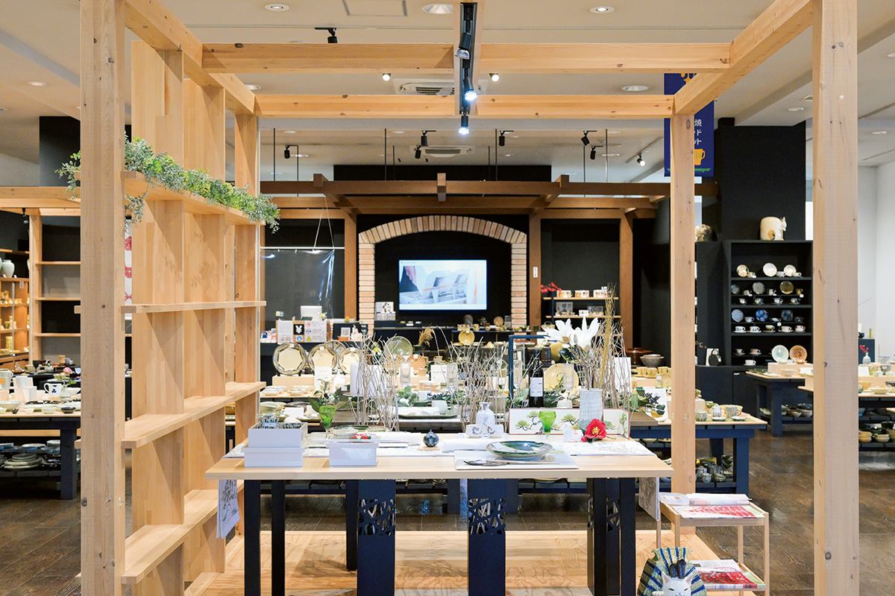
На втором и третьем этажах работает музей «Сэтогура», где можно проследить больше тысячи лет керамики Сэто.
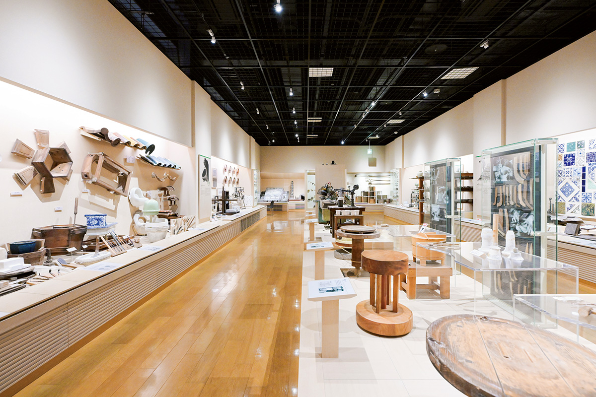
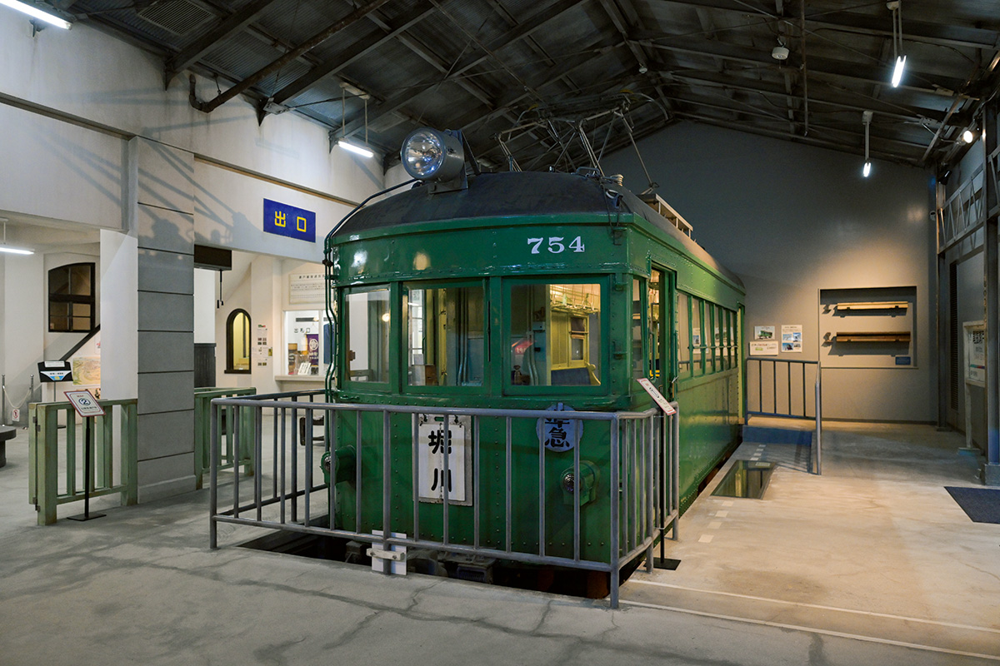
«В отличие от глины других старых гончарных центров, глина Сэто была совсем белой. Поэтому здесь раньше всех и развилась глазурь»
директор магазина
В магазине можно сравнить керамику шести старых центров Японии и посмотреть на «семь глазурей Сэто», так что посуду выбираешь, попутно узнавая много нового.
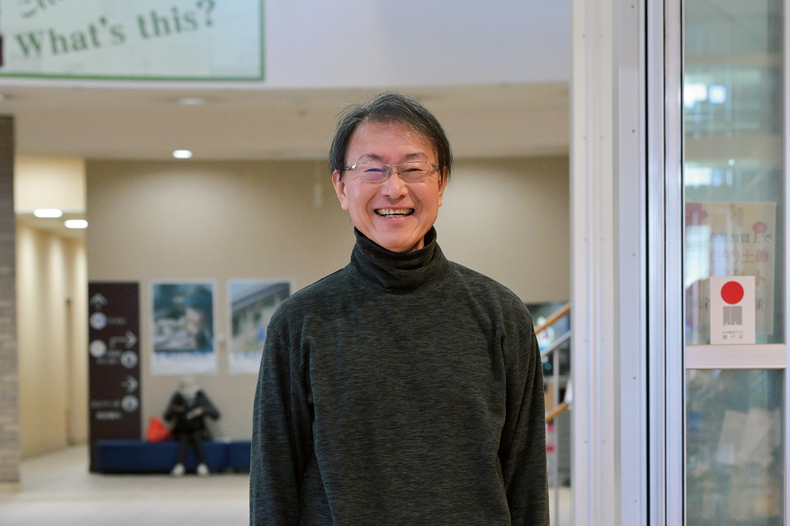
«Сэтогура керамик плаза» и музей «Сэтогура»
- Адрес
- префектура Айти, Сэто, Курасё-тё, 1-1, «Сэтогура», 1-й этаж (музей на 2–3-м этажах)
- Телефон
- магазин +81 561-89-5758, музей +81 561-97-1190
- Часы работы
- магазин 10:00–17:30, музей 9:00–17:00 (вход до 16:30)
- Выходные
- раз в месяц
- Цены / Вход
- музей 520 иен, магазин бесплатно
Тропа «Камагаки-но комити»
«Камагаки» называют стены и ограды, сложенные из старого печного инвентаря, которым пользовались в ступенчатых печах нобори-гама. В них идут «танаита», плиты, на которые ставили посуду, «цуку», подпорки, и «энгоро», цилиндрические капсулы, в которых посуду обжигали стопкой. Такие стены разбросаны по всему городу, но больше всего старины хранит тропа длиной около 400 м в квартале Хора, где сосредоточены мастерские.
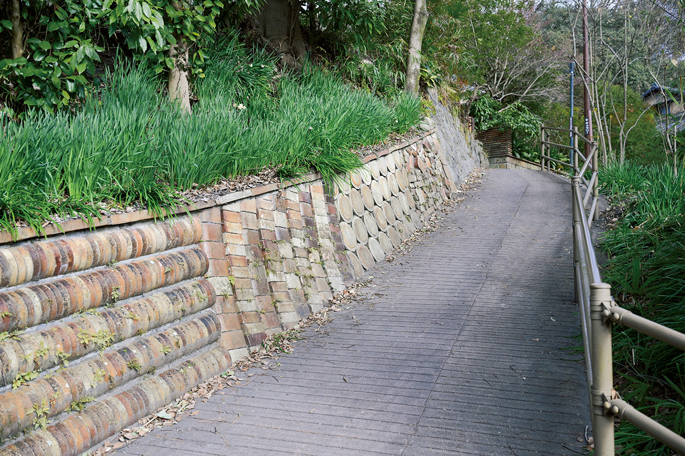
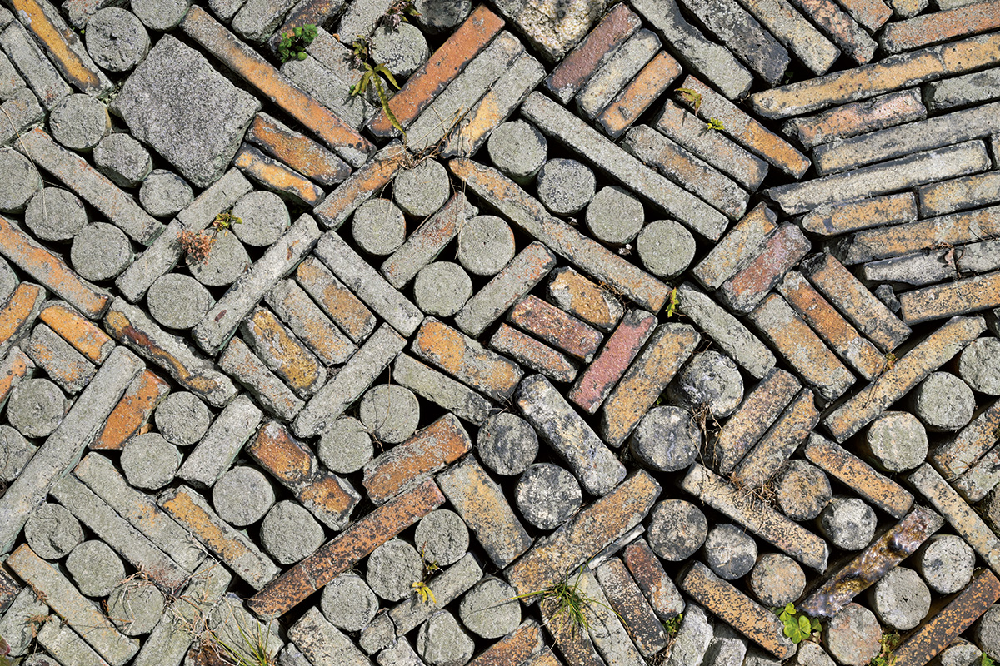
«Камагаки-но комити»
- Адрес
- префектура Айти, Сэто, Нака-Бора-тё, 8 (стоянка у тропы)
Masukichi: гостиница в доме гончара
Гостиницу открыл в 2018 году уроженец Сэто, чтобы бережно рассказывать гостям о городе керамики. Двухэтажному деревянному дому 140 лет. Здесь жил гончар Масукити Кавамото (1831–1907), который первым в Японии сумел сделать кофейную чашку в западном стиле.
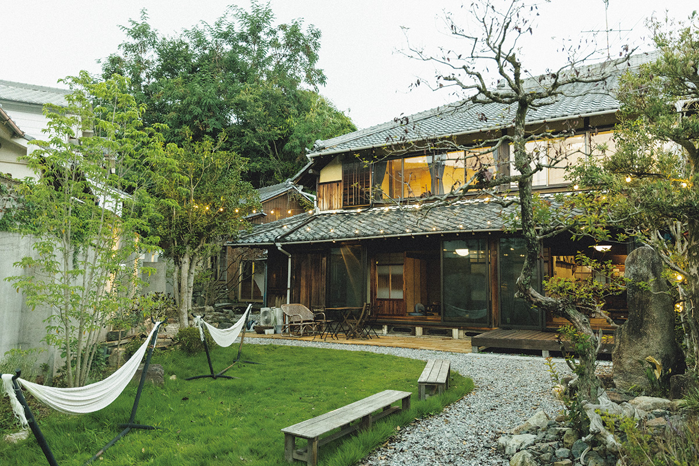
Потолки номеров обшиты досками из гончарных мастерских, на кухне для гостей и в кафе посуда из Сэто. В комнате с татами на первом этаже выставлены на продажу вещи местных мастерских. Гостиница к тому же устраивает экскурсии по глиняным карьерам, куда обычно не пускают. Отсюда удобнее всего знакомиться с керамикой Сэто всерьёз.
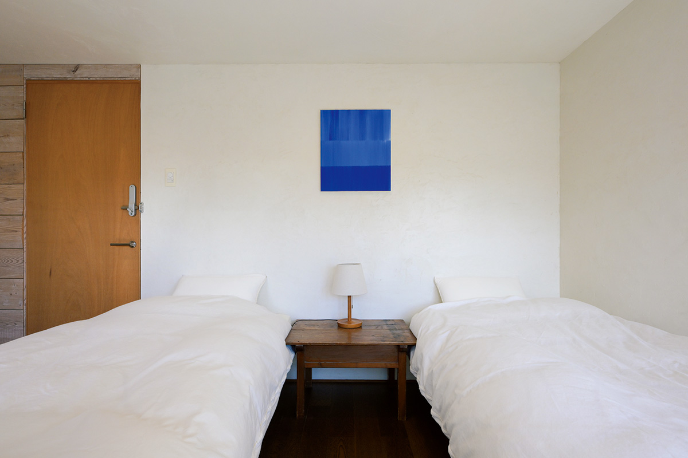
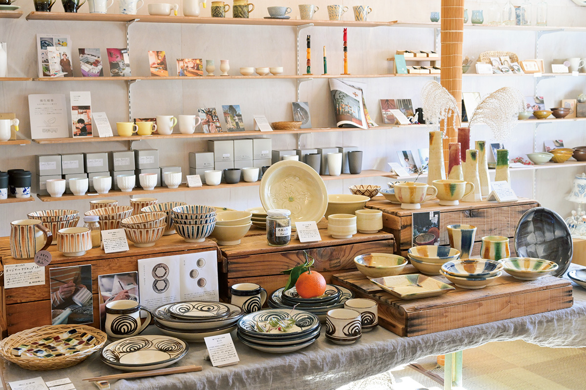
«Это место, где рассказывают о Сэто, поэтому мы рады и тем, кто заходит только в кафе или магазин»
основатель Masukichi
Гостиница проводит и экскурсии по мастерским, и экскурсии на карьеры, чтобы гости поняли, откуда берётся керамика Сэто.
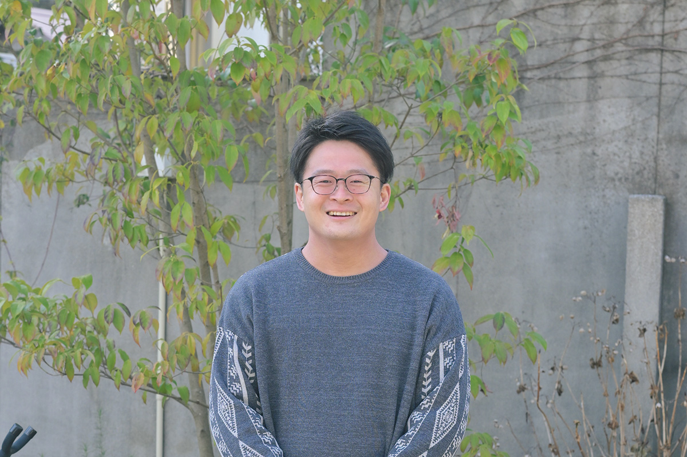
Masukichi
- Адрес
- префектура Айти, Сэто, Накагири-тё, 22
- Телефон
- +81 80-4614-5325
- Часы работы
- кафе и магазин пн–чт 15:00–21:00, пт–вс и праздники с 13:00
- Выходные
- нет
- Цены / Вход
- от 4000 иен за ночь (с налогом и сервисным сбором)
Музей керамики префектуры Айти
Это один из лучших в Японии музеев керамики: в его собрании около 8000 предметов от периода Дзёмон до наших дней, среди них три важных культурных ценности страны. В 2026 году здесь проходила выставка чайной утвари разных времён и стран.
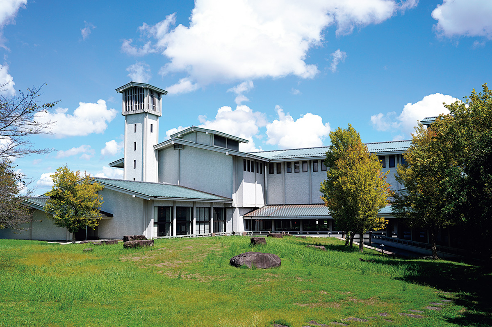
При музее есть гончарный корпус, где можно попробовать себя в деле: слепить вещь или расписать готовую.
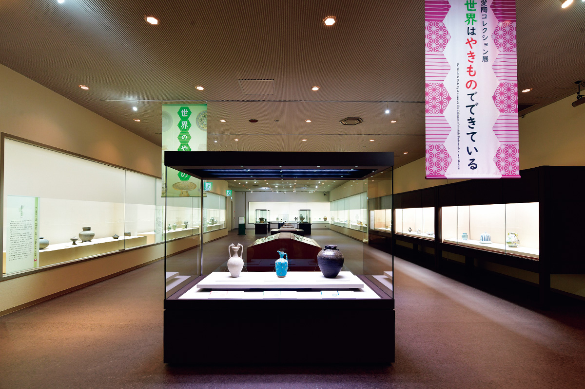
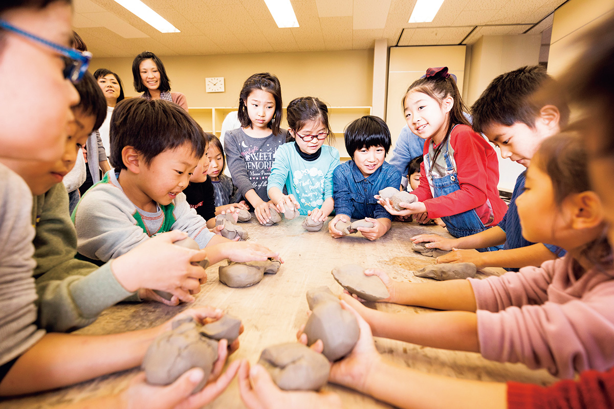
Музей керамики префектуры Айти
- Адрес
- префектура Айти, Сэто, Минами-Ямагути-тё, 234
- Телефон
- +81 561-84-7474
- Часы работы
- 9:30–16:30 (вход до 16:00), с 1 июля до конца сентября до 17:00 (вход до 16:30)
- Выходные
- понедельник (если праздник, то следующий рабочий день)
- Цены / Вход
- 400 иен, гончарные занятия от 1000 иен
STUDIO 894: распиши свою манэки-нэко
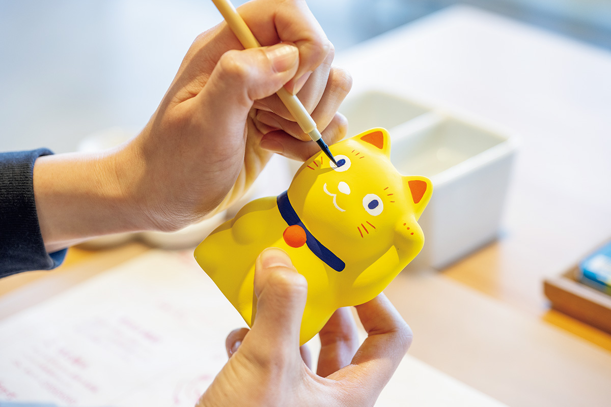
Студию керамики держит компания «Тюгай тоэн», которая много лет делает манэки-нэко и другие фигурки на счастье.
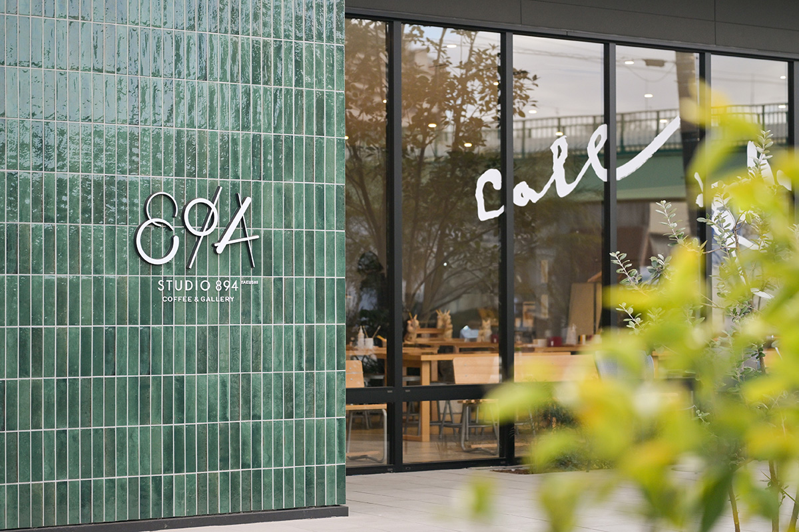
На выбор три занятия: раскраска керамики, роспись фарфора и перевод узора с медной гравюры на фарфор. Здесь же кофейня и галерея, так что студия подходит и для передышки во время прогулки.
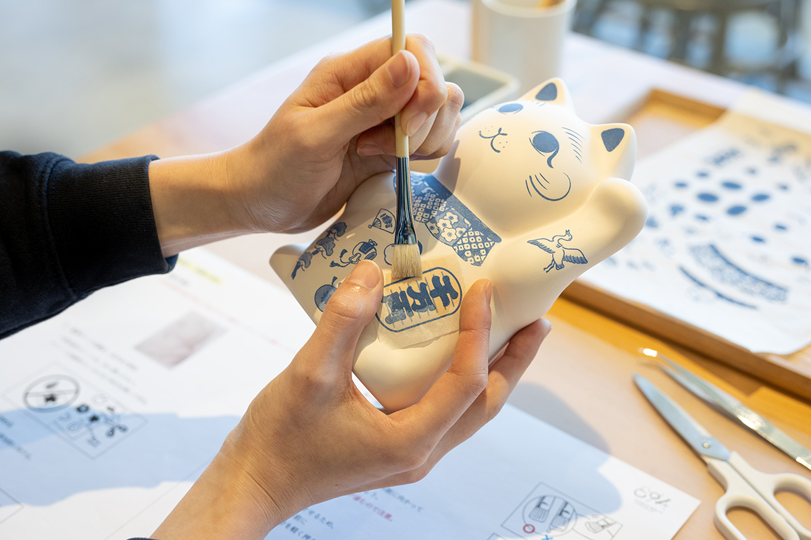
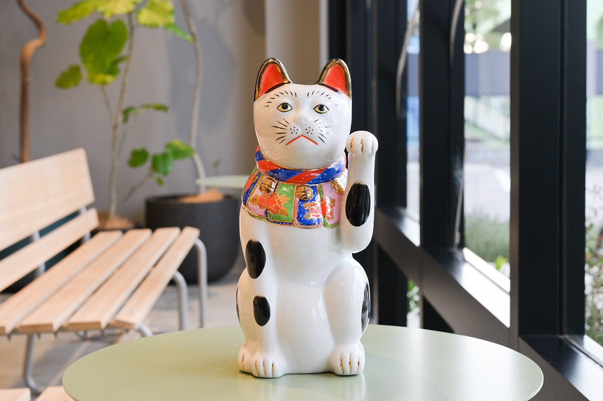
STUDIO 894
- Адрес
- префектура Айти, Сэто, Якуси-мати, 1
- Телефон
- +81 561-84-0894
- Часы работы
- 10:00–17:00 (запись на роспись до 15:30)
- Выходные
- вторник (если праздник, то работает), новогодние дни
- Цены / Вход
- роспись от 1500 иен
- Сайт
- studio894.jp
Праздники
Весна и осень гончарного города
Лучшее время, чтобы встретить мастеров лично, это праздники. В третье воскресенье апреля и накануне вокруг святилища Суэхико проходит «Сэто тосо-мацури», праздник основателя керамики, а в здании бывшей школы Фукагава одновременно работает ярмарка Land of Pottery. Есть ещё «Кама-мэгури», обход гончарных мастерских: в апреле в районе Мидзуно, в мае в Акадзу и Синано, в ноябре во всех трёх. В эти дни открывают мастерские и галереи, куда обычно не попасть, и можно взять посуду в руки, поговорив с теми, кто её сделал.
Land of Pottery
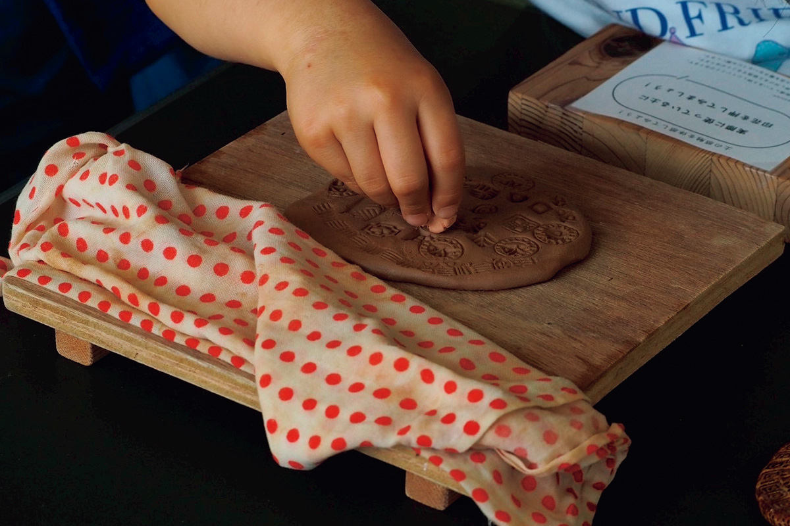
В 2026 году на ярмарке было 24 участника: гончары, мастера, мастерские и компании, которые занимаются сырьём и инструментами. Они показывали, как делают керамику и какими инструментами, проводили мастер-классы и продавали свои вещи. Так легче понять, откуда берётся керамика Сэто. Ярмарка прошла 18 и 19 апреля, вход был бесплатным.
«Сэто тосо-мацури»
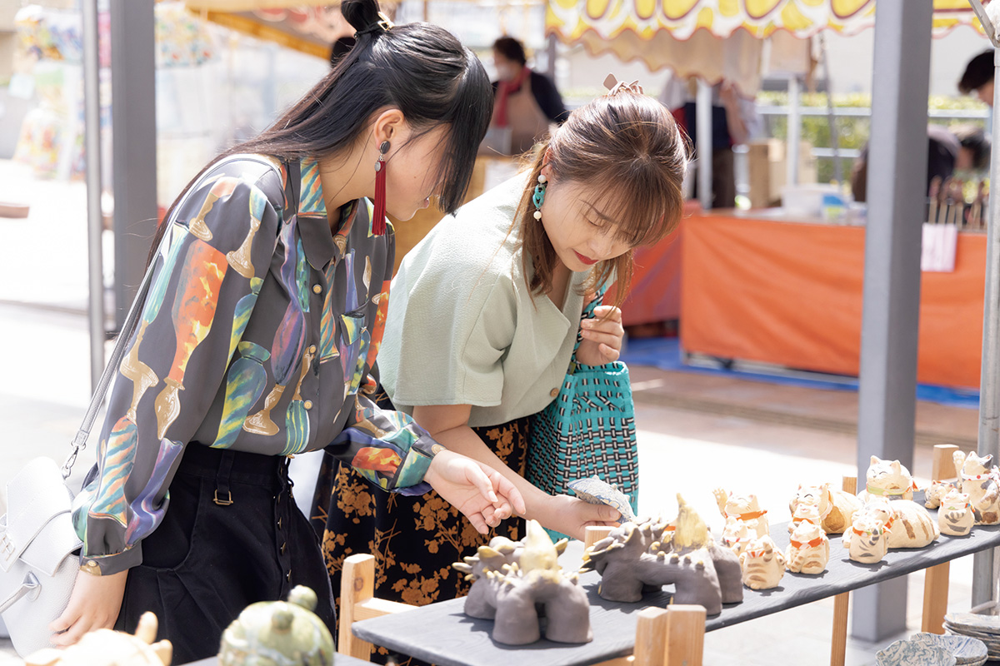
Праздник в память об основателе гончарного дела проводят с 1962 года. Кроме поминальной церемонии в честь основателя здесь распродают посуду, учат детей и взрослых лепить комаину и устраивают концерты, и весь Сэто оживает. В 2026 году праздник прошёл 18 и 19 апреля вокруг станции Овари-Сэто.
Фото: Такаси Гоми.